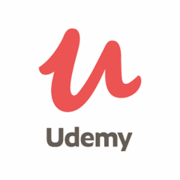

20 Best Python Certificate Courses [2021 NOVEMBER] [UPDATED]
Python Certification from University of Michigan (Coursera)
Complete Python Bootcamp: Go from zero to hero in Python (Udemy)
Applied Data Science with Python Certification (Coursera)
Python Certification for Data Science by IBM (Coursera)
Best Python Course for Data Science and Machine Learning (Udemy)
Free Python Certification (Digital Defynd)
Python for Managers (Columbia Business School)
Google IT Automation with Python Professional Certificate by Google (Coursera)
PCAP: Programming Essentials in Python (Cisco Networking Academy)
Learn Intermediate Python Nanodegree Program (Udacity)
Professional Python Certification Program (Python Institute)
Python Certification (W3School)
Learn Python Programming Masterclass (Udemy)
Python 3 Programming Certification by University of Michigan (Coursera)
Professional Certificate in Introduction to Python Programming by Georgia Tech (edX)
Bonus Courses
A global team of 50+ Experts has compiled this list of Best Python Certification and Courses online
for 2021. These resources will help you learn Python from scratch, and they are suitable for all
levels of learners. 162,000+ Professionals and Students have already benefited from this
compilation. You may want to take a look at some of the Best Python Data Science Courses
and Best Data Science Courses.
10 Best Python Certifications for 2021
1. Python Certification from University of Michigan (Coursera)
University of MichiganThis Python certification will teach you how to Program and Analyze Data
with Python. This online program, taught by Charles Severance, Associate Professor at the
University of Michigan, will introduce you to foundational programming concepts
including data structures, networked application program interfaces, and databases using
Python. After the completion of the core concepts, you will get an opportunity to work on
a final Capstone project and implement the skills you have acquired throughout the lectures.
Along with this program, you may also want to take a look at our compilation of
Best Machine Learning Course.
Key USPs-
– As this is a beginner-level course, it is perfect for learners with little or no basic programming experience.
– You will learn to implement the concepts covered in the lessons by writing your first Python program and experimenting with different techniques.
– The lectures are designed in a fun and interactive manner which makes it engaging and intriguing.
– The program is divided into a series of 5 courses with increasing level of difficulty that includes topics like Getting Started, Data Structures, Using Python to Access Web Data and Using Databases with Python.
Duration : 3 months
Rating: 4.8 out of 5
Review – Just loved this course and the material it provides.
A good place to start learning programming and definitely recommend to others.
Simple english and understandalbe accent makes this course the best of all other MOOCs available.
Very instructive exercises and efficient interaction among colleagues and mentors in the forum.
2. Complete Python Bootcamp: Go from zero to hero in Python (Udemy)
Over 230,000+ students have attended this program and it enjoys a massive positive rating of 4.5 out of 5, making it one of the Best Python courses available online. The trainer Jose Marcial Portilla is widely renowned for his knowledge and online teaching skills. With a BS and MS from Santa Clara University, he is a master trainer for programming and Data Science. He has trained employees of organizations such as General Electric, Cigna, The New York Times, and many more. You will receive 12.5 hours of on-demand video + 17 articles accessible anytime anywhere forever. Along with this course, you may also be interested in having a look at some of the best Data Science Certification Courses.
Key USPs-
– Learn about both Python 2 and Python 3
– Create games with Python (Tic Tac Toe and Blackjack)
– Learn advanced Python features (collections module and working with timestamps)
– How to use Object Oriented Programming with classes
– Learn to use Jupyter Notebook and create .py files
– Learn to create GUIs in Jupyter Notebook system
Duration : 24 hours
Rating: 4.6 out of 5
Review – Excellent intro to Python, covering a range of different fields/applications. Pace is just right and Jose’s instruction is very good – he moves through steadily & patiently, with interesting asides about real-world applications & usage tips. I’d definitely recommend the course to others and have already signed up to another of his.
3. Best Python Course for Data Science and Machine Learning (Udemy)
Over 230,000+ students have attended this program and it enjoys a massive positive rating of 4.5 out of 5, making it one of the Best Python courses available online. The trainer Jose Marcial Portilla is widely renowned for his knowledge and online teaching skills. With a BS and MS from Santa Clara University, he is a master trainer for programming and Data Science. He has trained employees of organizations such as General Electric, Cigna, The New York Times, and many more. You will receive 12.5 hours of on-demand video + 17 articles accessible anytime anywhere forever. Along with this course, you may also be interested in having a look at some of the best Data Science Certification Courses.
Key USPs-
– Learn about both Python 2 and Python 3
– Create games with Python (Tic Tac Toe and Blackjack)
– Learn advanced Python features (collections module and working with timestamps)
– How to use Object Oriented Programming with classes
– Learn to use Jupyter Notebook and create .py files
– Learn to create GUIs in Jupyter Notebook system
Duration : 24 hours
Rating: 4.6 out of 5
Review – Review – Excellent intro to Python, covering a range of different fields/applications. Pace is just right and Jose’s instruction is very good – he moves through steadily & patiently, with interesting asides about real-world applications & usage tips. I’d definitely recommend the course to others and have already signed up to another of his.
4. Complete Python Bootcamp: Go from zero to hero in Python (Udemy)
Over 230,000+ students have attended this program and it enjoys a massive positive rating of 4.5 out of 5, making it one of the Best Python courses available online. The trainer Jose Marcial Portilla is widely renowned for his knowledge and online teaching skills. With a BS and MS from Santa Clara University, he is a master trainer for programming and Data Science. He has trained employees of organizations such as General Electric, Cigna, The New York Times, and many more. You will receive 12.5 hours of on-demand video + 17 articles accessible anytime anywhere forever. Along with this course, you may also be interested in having a look at some of the best Data Science Certification Courses.
Key USPs-
– Learn about both Python 2 and Python 3
– Create games with Python (Tic Tac Toe and Blackjack)
– Learn advanced Python features (collections module and working with timestamps)
– How to use Object Oriented Programming with classes
– Learn to use Jupyter Notebook and create .py files
– Learn to create GUIs in Jupyter Notebook system
Duration : 24 hours
Rating: 4.6 out of 5
Review – Excellent intro to Python, covering a range of different fields/applications. Pace is just right and Jose’s instruction is very good – he moves through steadily & patiently, with interesting asides about real-world applications & usage tips. I’d definitely recommend the course to others and have already signed up to another of his.
5. Applied Data Science with Python Certification (Coursera)
Over 230,000+ students have attended this program and it enjoys a massive positive rating of 4.5 out of 5, making it one of the Best Python courses available online. The trainer Jose Marcial Portilla is widely renowned for his knowledge and online teaching skills. With a BS and MS from Santa Clara University, he is a master trainer for programming and Data Science. He has trained employees of organizations such as General Electric, Cigna, The New York Times, and many more. You will receive 12.5 hours of on-demand video + 17 articles accessible anytime anywhere forever. Along with this course, you may also be interested in having a look at some of the best Data Science Certification Courses.
Key USPs-
– Learn about both Python 2 and Python 3
– Create games with Python (Tic Tac Toe and Blackjack)
– Learn advanced Python features (collections module and working with timestamps)
– How to use Object Oriented Programming with classes
– Learn to use Jupyter Notebook and create .py files
– Learn to create GUIs in Jupyter Notebook system
Duration : 24 hours
Rating: 4.6 out of 5
– Review – Excellent intro to Python, covering a range of different fields/applications. Pace is just right and Jose’s instruction is very good – he moves through steadily & patiently, with interesting asides about real-world applications & usage tips. I’d definitely recommend the course to others and have already signed up to another of his.
Advertisements
Tag Cloud
Paragraph
We don’t display any ads. We don’t store your data.
We don’t retarget you on the internet.
We simply focus on bringing you the best courses from all across the world at one place.
We update our listings regularly to ensure you get the latest information available.
We also offer a Free DigitalDefynd Certificate for any course you take online.
Disclaimer: When you buy through some links on our site, we may earn a small fee.
Recent Blogs
Even the all-powerful Pointing has no control about the blind texts
Nov 14,2022 Admin 20
Even the all-powerful Pointing has no control about the blind texts
Nov 14,2022 Admin 20
Even the all-powerful Pointing has no control about the blind texts
Nov 14,2022 Admin 20

Even the all-powerful Pointing has no control about the blind texts